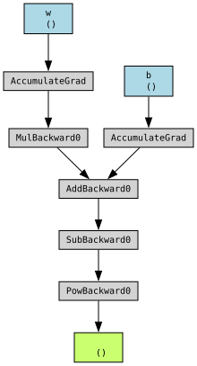
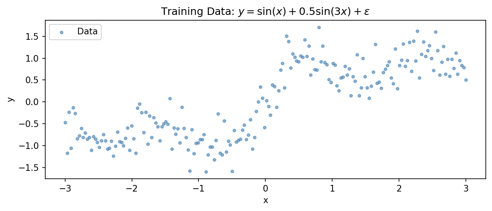
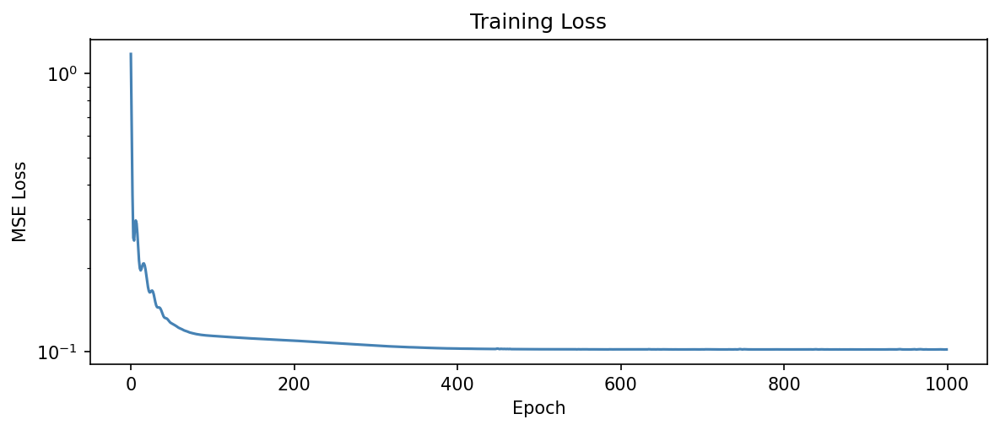
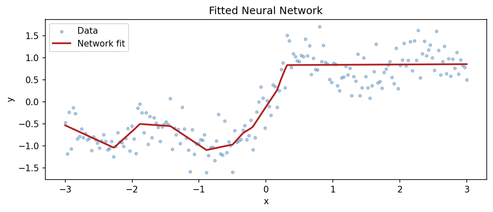
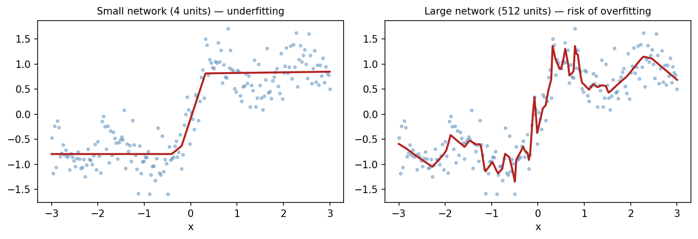
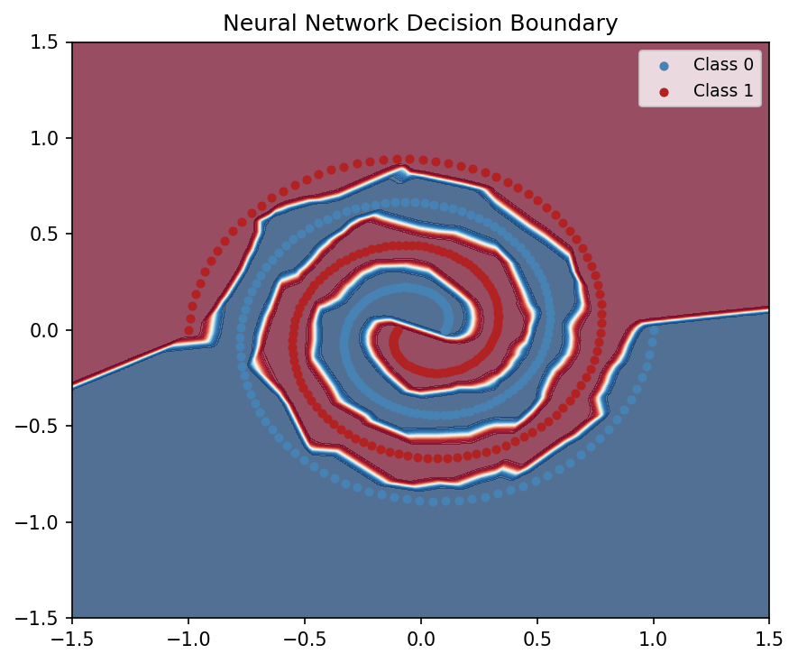

Introduction to Machine Learning
model.fit() performs the forward pass, loss computation, backpropagation, and parameter updates automatically.Training a neural network consists of repeatedly executing three steps:
In implementation, the forward pass is split into prediction and loss computation.
torch.Tensor objects, multi-dimensional arrays that support hardware acceleration and automatic differentiation.requires_grad=True tells PyTorch to track operations involving the tensor.w and b) are leaf tensors and serve as the independent variables in the computational graph..grad): Initially None, this attribute stores the gradient computed during backpropagation. Gradients accumulate unless explicitly cleared..grad_fn): Tensors produced by operations have a .grad_fn attribute that records the operation used to create them, allowing PyTorch to traverse the computational graph during backpropagation.When a tensor has requires_grad=True, PyTorch builds a computational graph that records how operations compose together. The example here is:
import torch
from torchviz import make_dot
# Tensors tracking gradients
x = torch.tensor(2.0)
w = torch.tensor(-1.5, requires_grad=True)
b = torch.tensor(0.5, requires_grad=True)
# Forward pass tracks operations
z = w * x + b
loss = (z - 1.0)**2
# Visualizes the dynamic DAG
make_dot(loss, params={'w': w, 'b': b})
loss.backward() initiates backpropagation..grad attribute of each parameter (w.grad and b.grad in this example)loss.backward() repeatedly, the gradients add to the existing ones. unless they are explicitly cleared (e.g., w.zero_grad()).w.grad, b.grad:Note
Automatic differentiation computes exact derivatives (up to floating-point precision), unlike numerical differentiation, while requiring work proportional to the forward computation.
PyTorch models can be built directly by stacking layers linearly using nn.Sequential.
This is the same neural network from Presentation 4
import torch
import torch.nn as nn
model = nn.Sequential(
nn.Linear(1, 32),
nn.ReLU(),
nn.Linear(32, 32),
nn.ReLU(),
nn.Linear(32, 1)
)
print(model)Sequential(
(0): Linear(in_features=1, out_features=32, bias=True)
(1): ReLU()
(2): Linear(in_features=32, out_features=32, bias=True)
(3): ReLU()
(4): Linear(in_features=32, out_features=1, bias=True)
)total_params = sum(p.numel() for p in model.parameters())
print(f"Total trainable parameters: {total_params}")Total trainable parameters: 1153Each nn.Linear(in, out) layer has \(\text{in} \times \text{out}\) weights plus \(\text{out}\) biases.
For our network: \((1 \times 32 + 32) + (32 \times 32 + 32) + (32 \times 1 + 1) = 1,153\) parameters.
This is small by any standard. A modern language model has billions.
But the training loop is identical — the same four moves, regardless of scale.
Everything in PyTorch training maps to four steps:
optimizer.zero_grad() clears gradients from the previous iteration. By default PyTorch accumulates gradients — forgetting this is a common bug.
The optimizer implements gradient descent:
\[\theta \leftarrow \theta - \eta \, \nabla_\theta \mathcal{L}\]
.backward()This is the same minimization from Presentation 1 — we are still minimizing an empirical loss.
The only difference is scale: millions of parameters instead of a handful.
Adam is the default choice for most neural network training — it adapts the learning rate for each parameter individually, making it more robust than plain SGD.
We fit the same oscillating signal from Presentation 4: \(y = \sin(x) + 0.5\sin(3x) + \varepsilon\)

torch.manual_seed(42)
model = SimpleNet(input_dim=1, hidden_dim=32, output_dim=1)
loss_fn = nn.MSELoss()
optimizer = optim.Adam(model.parameters(), lr=0.01)
losses = []
for epoch in range(5000):
y_pred = model(X)
loss = loss_fn(y_pred, y)
optimizer.zero_grad()
loss.backward()
optimizer.step()
if epoch % 100 == 0:
losses.append(loss.item())
print(f"Epoch {epoch:4d} | Loss: {loss.item():.4f}")Epoch 0 | Loss: 1.1776
Epoch 100 | Loss: 0.1141
Epoch 200 | Loss: 0.1097
Epoch 300 | Loss: 0.1054
Epoch 400 | Loss: 0.1028
Epoch 500 | Loss: 0.1022
Epoch 600 | Loss: 0.1021
Epoch 700 | Loss: 0.1021
Epoch 800 | Loss: 0.1020
Epoch 900 | Loss: 0.1020
Epoch 1000 | Loss: 0.1021
Epoch 1100 | Loss: 0.1020
Epoch 1200 | Loss: 0.1019
Epoch 1300 | Loss: 0.1020
Epoch 1400 | Loss: 0.1020
Epoch 1500 | Loss: 0.1019
Epoch 1600 | Loss: 0.1019
Epoch 1700 | Loss: 0.1019
Epoch 1800 | Loss: 0.1018
Epoch 1900 | Loss: 0.1018
Epoch 2000 | Loss: 0.1017
Epoch 2100 | Loss: 0.1017
Epoch 2200 | Loss: 0.1018
Epoch 2300 | Loss: 0.1016
Epoch 2400 | Loss: 0.1014
Epoch 2500 | Loss: 0.1012
Epoch 2600 | Loss: 0.1010
Epoch 2700 | Loss: 0.1005
Epoch 2800 | Loss: 0.0999
Epoch 2900 | Loss: 0.0993
Epoch 3000 | Loss: 0.0864
Epoch 3100 | Loss: 0.0852
Epoch 3200 | Loss: 0.0844
Epoch 3300 | Loss: 0.0836
Epoch 3400 | Loss: 0.0975
Epoch 3500 | Loss: 0.0823
Epoch 3600 | Loss: 0.0821
Epoch 3700 | Loss: 0.0824
Epoch 3800 | Loss: 0.0815
Epoch 3900 | Loss: 0.0815
Epoch 4000 | Loss: 0.0811
Epoch 4100 | Loss: 0.0810
Epoch 4200 | Loss: 0.0814
Epoch 4300 | Loss: 0.0809
Epoch 4400 | Loss: 0.0813
Epoch 4500 | Loss: 0.0809
Epoch 4600 | Loss: 0.0827
Epoch 4700 | Loss: 0.0807
Epoch 4800 | Loss: 0.0807
Epoch 4900 | Loss: 0.0827

We use custom Python classes inheriting from nn.Module to build and reuse architectures.
forward(self, x) method. This tells PyTorch exactly how your input data moves through your layers.def forward(), but you never call model.forward(x) in your code. You just run model(x). PyTorch handles the execution under the hood and tracks it on the graph.#| echo: false
class SimpleNet(nn.Module):
def __init__(self, input_dim, hidden_dim, output_dim):
super().__init__()
self.layers = nn.Sequential(
nn.Linear(input_dim, hidden_dim),
nn.ReLU(),
nn.Linear(hidden_dim, hidden_dim),
nn.ReLU(),
nn.Linear(hidden_dim, output_dim)
)
def forward(self, x):
return self.layers(x)The same bias–variance tradeoff from Presentation 1 applies here.

More capacity means the network can fit more complex functions — but without regularization or early stopping, it will memorize the training data.
The tools are the same: validation sets, regularization, careful model selection.
The same pattern applies to classification. The loss changes from MSE to cross-entropy.
# Binary classification: spiral data
torch.manual_seed(0)
np.random.seed(0)
n = 200
theta = np.linspace(0, 4 * np.pi, n)
r = np.linspace(0.1, 1, n)
X0 = np.column_stack([r * np.cos(theta), r * np.sin(theta)])
X1 = np.column_stack([r * np.cos(theta + np.pi), r * np.sin(theta + np.pi)])
X_cls = torch.tensor(np.vstack([X0, X1]), dtype=torch.float32)
y_cls = torch.tensor([0] * n + [1] * n, dtype=torch.long)model_cls = SimpleNet(input_dim=2, hidden_dim=64, output_dim=2)
loss_fn = nn.CrossEntropyLoss() # softmax + cross-entropy
optimizer = optim.Adam(model_cls.parameters(), lr=0.01)
for epoch in range(2000):
logits = model_cls(X_cls)
loss = loss_fn(logits, y_cls)
optimizer.zero_grad()
loss.backward()
optimizer.step()nn.CrossEntropyLoss combines softmax and cross-entropy in one step — the same loss from Presentation 2, now applied inside the training loop.

The same network that fits a sine wave can separate a spiral — because stacking layers with activations produces functions expressive enough to approximate any continuous boundary.
Each PyTorch component corresponds to a concept from earlier:
| PyTorch concept | Earlier idea |
|---|---|
requires_grad, .backward() |
Chain rule from calculus |
| MSE loss | Empirical risk minimization (Presentation 1) |
| Cross-entropy loss | Maximum likelihood (Presentation 2) |
optimizer.step() |
Gradient-based optimization |
| Validation loss | Bias–variance tradeoff (Presentation 1) |
nn.Module |
Parameterized function class |
PyTorch implements these mathematical ideas in an automated and scalable form: it records operations, computes gradients via reverse-mode automatic differentiation, and applies optimization updates over many parameters.